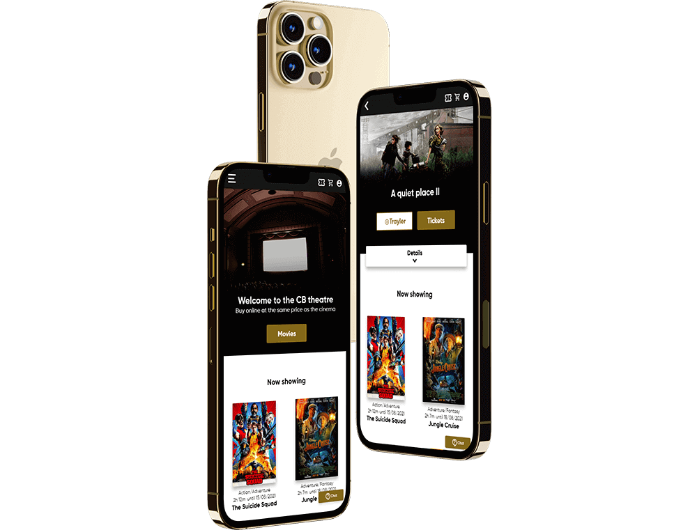
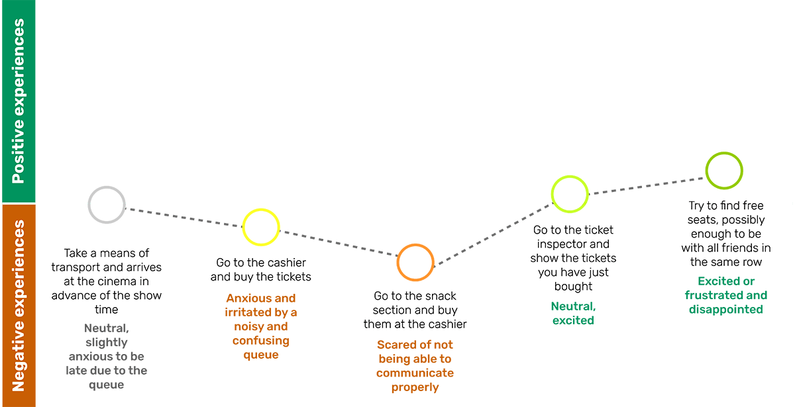
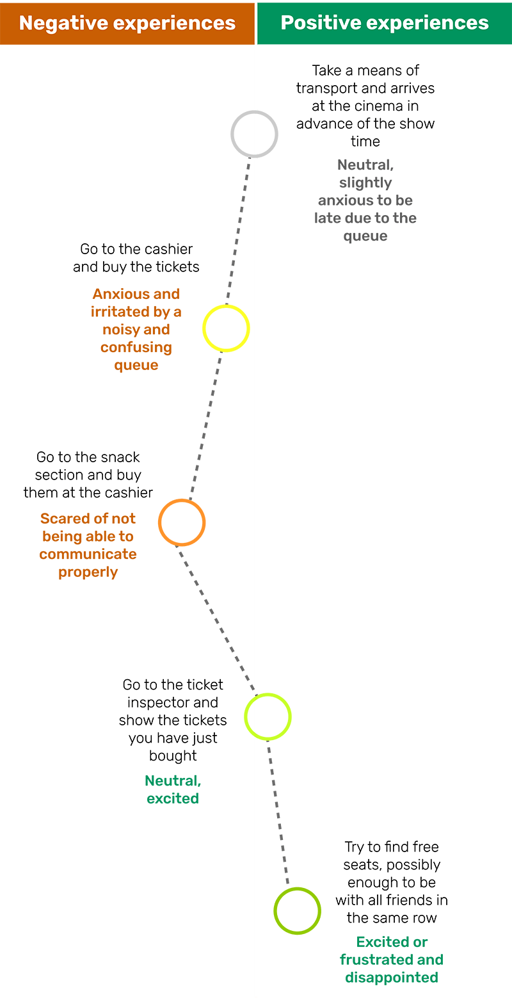
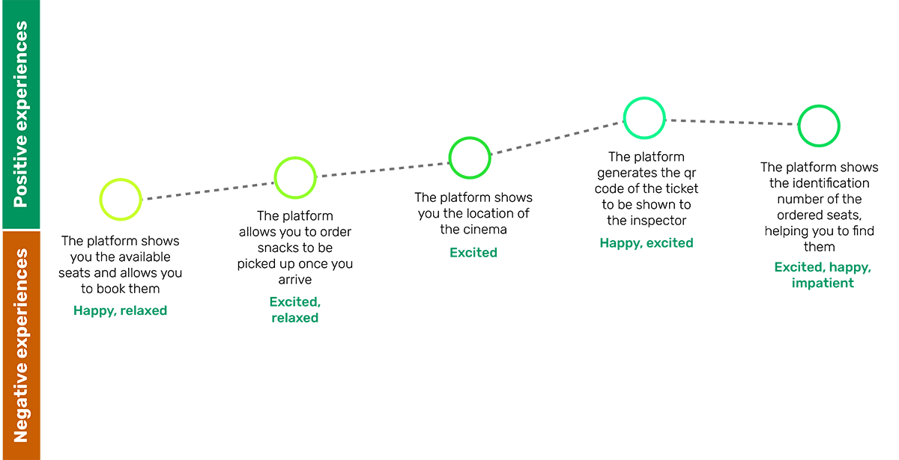

CB Theater
Creating a responsive website for a fictitious multiplex cinema.
Faster ordering and possibility of viewing free seats, from the comfort of your home.

Try the prototype and let me know what you think!
The project
My role:
I independently took care of all the steps necessary to carry out the project, from start to finish.
Duration:
From June 30th to August 10th, 2021.
What we have to know
Point #1
Users want to be able to choose their seats.
Point #2
Users don't want to spend too much time in line.
Point #3
Users want to know how many seats are available before going to the cinema.
Point #4
Users may have problems with the language.
Point #5
Users want to be warned if vacancies are running out.
The data
I analyzed: the company's target, the website on mobile and desktop, the features, accessibility, user flow, navigation, graphic elements, corporate tone and contents, strengths points and weak points.
What i found
The target was heterogeneous, the platforms were all responsive, the tone was informal, fun and friendly, the graphics were generally simple but attractive, the website usually had an intuitive layout,
not many features were present.
Thanks to this analysis I was able to plan the next steps..
Thinking about the users
Example: Hassan Fatima user journey
 Let's now analyze how the product may have helped Hassan in the process

The platform would help Hassan and improve his user experiences.
Let's start creating
Paper wireframes
First I created some paper wireframes as they are easier and faster to produce and modify.
Digital wireframes and Prototyping
Later I created some digital wireframes and a prototype.
Objective
The aim of the study was to determine if users were able to buy a movie ticket and find the related QR code to show later.
Key performance indicator
the values that were taken into consideration were:
#1 Time on task
#2 User error rates
#3 Conversion rates
#4 Net promoter score
#5 System usability scale
What i found out
From the usability tests I received some feedback, the most frequent ones were:
#1
Users wanted more payment options.
#2
Users wanted more visible details about the selected movie.
#3
Some users wanted an option to save their purchase data so they don't have to re-enter them in the future.
#4
A button has been added to call up a chat bot to help users in case of need.
Conclusion
What I learned:
Thanks to this project I have better understood the features that users find useful and effective in the ordering process.